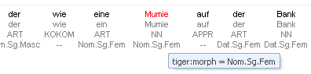
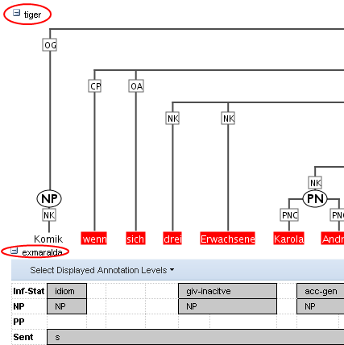

Using the ANNIS Interface
The ANNIS interface is comprised of several windows, the most important of which are the search form and the results window.The Search Form

The Search Form on the left of the interface window is available immediately after login. In the middle, the list of currently available corpora is shown. By clicking on the line with the corpus name, it is possible to select which corpora should be searched in (hold down 'ctrl' to select multiple corpora simultaneously).
The "AnnisQL" field at the top of the form is used for inputting queries manually (see the tutorials on the ANNIS Query Language). As soon as a one or several corpora are selected and a query is entered or modified, the query will be validated automatically and possible errors in the query syntax will be commented on in the "Status" box below. When modifying a query, a delay of two seconds ia activated before the query is re-sent to the server for validation.
Once a valid query has been entered, pressing the "Show Result" button will retrieve the number of matching positions in the selected corpora in the Result box and open the Result Window to display the first set of matches.

In order to get more control over the search you can click on "Search Options" to unfold more detailed search options. The context surrounding the matching expressions in the result list ist determined by the "context left" and "context right" options and can be set to up to 10 tokens on each side, though some corpora allow longer spans, such as entire texts, to be viewed using special discourse visualizations.
The Result Window

The result window shows search results in pages of 10 hits each by default (this can be changed in the Search Form). The toolbar at the top of the window allows you to navigate between these pages. The "Token Annotations" button on the toolbar allows you to toggle the token based annotations, such as lemmas and parts-of-speech, on or off for you convenience. The "Citation URL" button provides a hyperlink which you can e-mail or cite, allowing others to reproduce your query.
The result list itself initially shows a KWIC (key word in context) concordance of matching positions in the selected corpora, with the matching region marked red and the context in black on either side. Token annotations are displayed in gray under each token, and hovering over them with the mouse will show the annotation name and namespace. More complex annotation levels can be expanded, if available, by clicking on the plus icon next to the level's name, e.g. tiger and exmaralda for the annotations in the tree and grid views in the picture below (circled in red).
